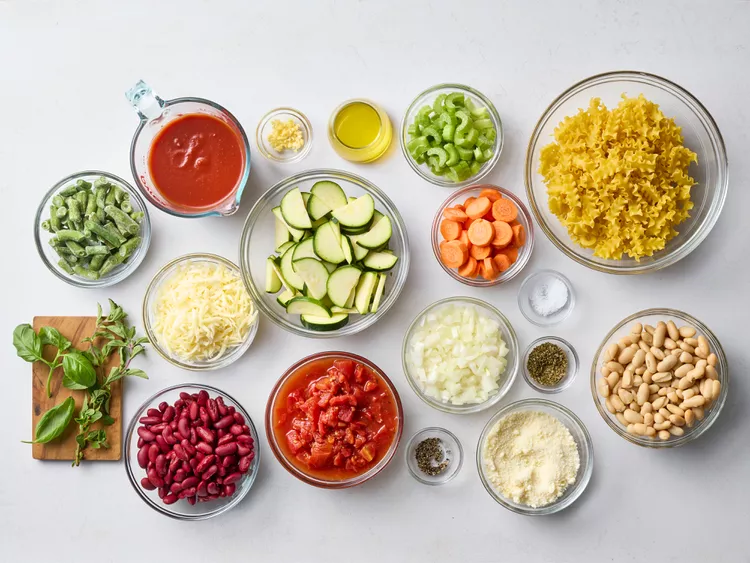
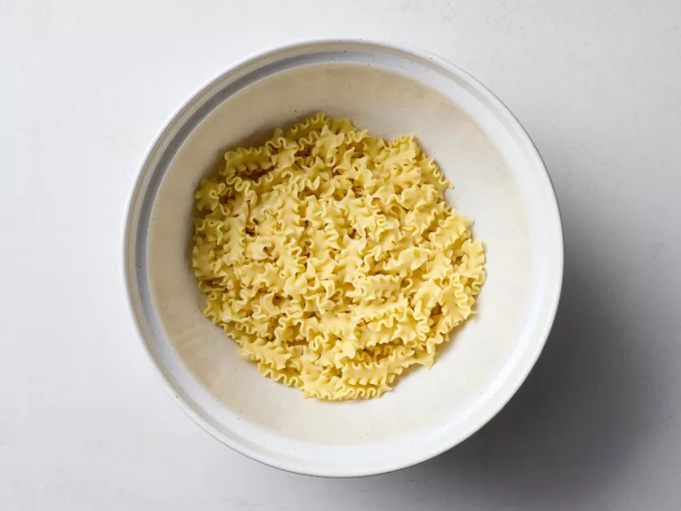
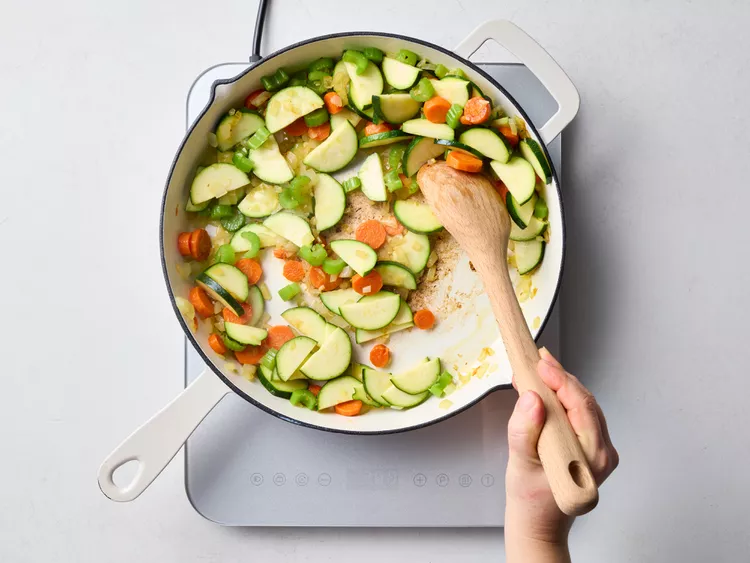
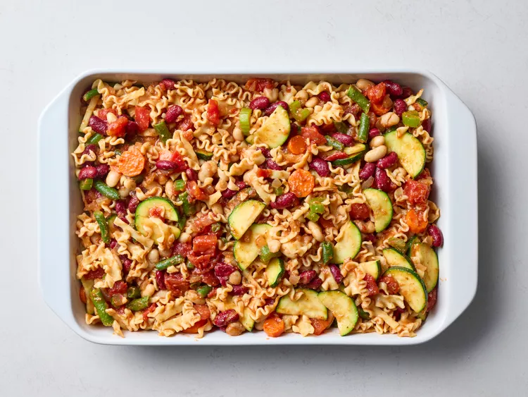
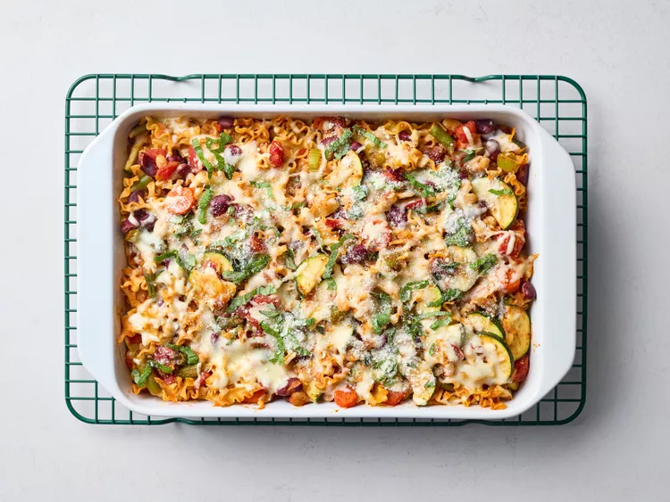

The secret to these awesome chicken enchiladas is in the seasonings! I whipped these up on my own using ingredients I had on hand. Shredding the chicken is the most time-consuming step, but it's worth it in the end. Serve with sour cream and a side of Spanish rice. Give these babies a try!
Gather all ingredients.
Preheat the oven to 350 degrees F (180 degrees C). Lightly coat a 3-quart baking dish with nonstick cooking spray.
Bring a large pot of water to a boil. Add pasta and cook, covered, for the minimum time according to package directions. Drain and transfer to a large bowl.
Meanwhile, heat oil in a large skillet over medium heat. Add onion, carrots, and celery; cover and cook, stirring occasionally, until carrots are just tender, 5 to 8 minutes. Add zucchini and garlic. Cook and stir 1 minute more.
Add carrot mixture, beans, tomatoes, green beans, tomato sauce, 1/4 cup Parmesan cheese, Italian seasoning, salt, and pepper to the bowl of pasta. Stir well to combine. Transfer pasta mixture to the prepared dish and cover with foil.
Bake in the preheated oven for 20 minutes. Remove foil and top with mozzarella cheese; continue baking until heated through and cheese is melted,10 to 15 minutes. Top each serving with remaining Parmesan cheese and sprinkle with fresh herbs.
